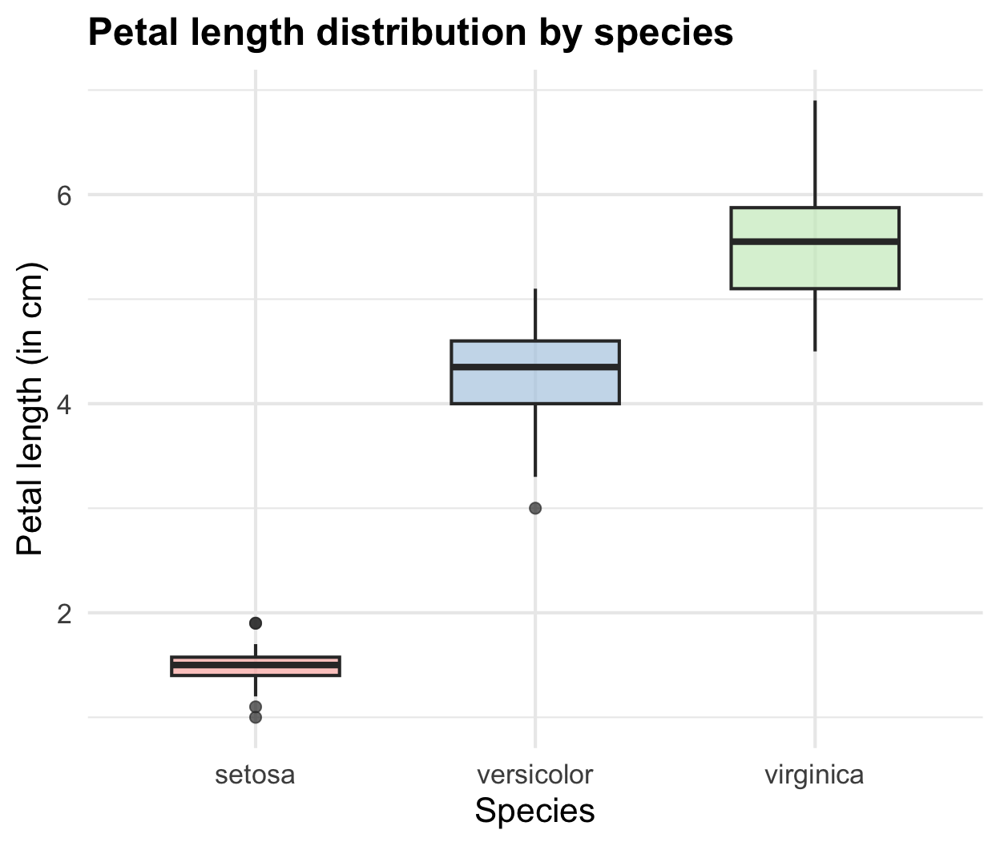
Week 14 - Visualizing the data
CHC9012 | National Taiwan Normal University
🎯 Goals
Visualize your results:
- What types of figures to select?
- How to plot multiple information in one figure?
💻 Dataset and script
Please download the files for the content of Week 13, and place them in your PreprocessingAnalysesR folder.
💻 Please start RStudio and select the project called PreprocessingAnalysesR.
👀 Part 1: Why using figures, and what kinds of figures?
Why plotting the data?
Why using a figure when we already have the table of results?
⏳ Activity: Please spend 10 minutes to brainstorm this question.
Nature of human cognition. Figures = more attractive than tables and texts.
Eyes sharper than we think. It is sometimes easier to observe tendencies with a figure.
Introduction to most common types of figures in experimental linguistics
Box Plots for Data Distribution
What it does:
Visualizes the spread, median, quartiles, and outliers of a continuous numerical variable across different categorical groups.
Core question
How does data distribution compare between groups? (e.g., Which Iris species has the longest petals?)
Bar plots for categorical counts
What it does:
Displays counts or frequencies of distinct categories.
Core question
Which categories are the most and least common in our dataset?
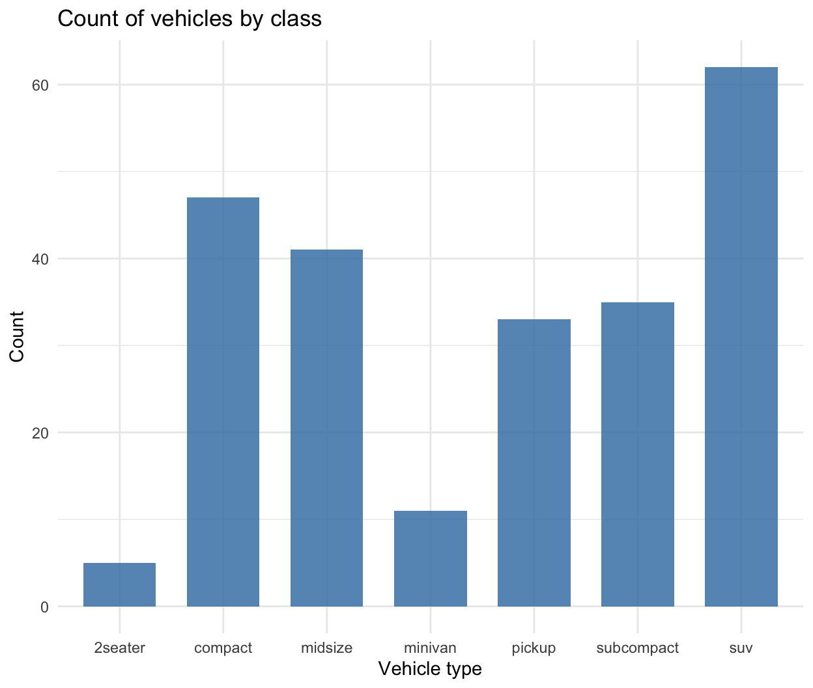
Line charts for continuous measurement, generally over time
What it does:
Connects individual data points chronologically or sequentially to reveal trajectories, spikes, or downward dips.
Core question
How is our metric moving over a continuous sequence?
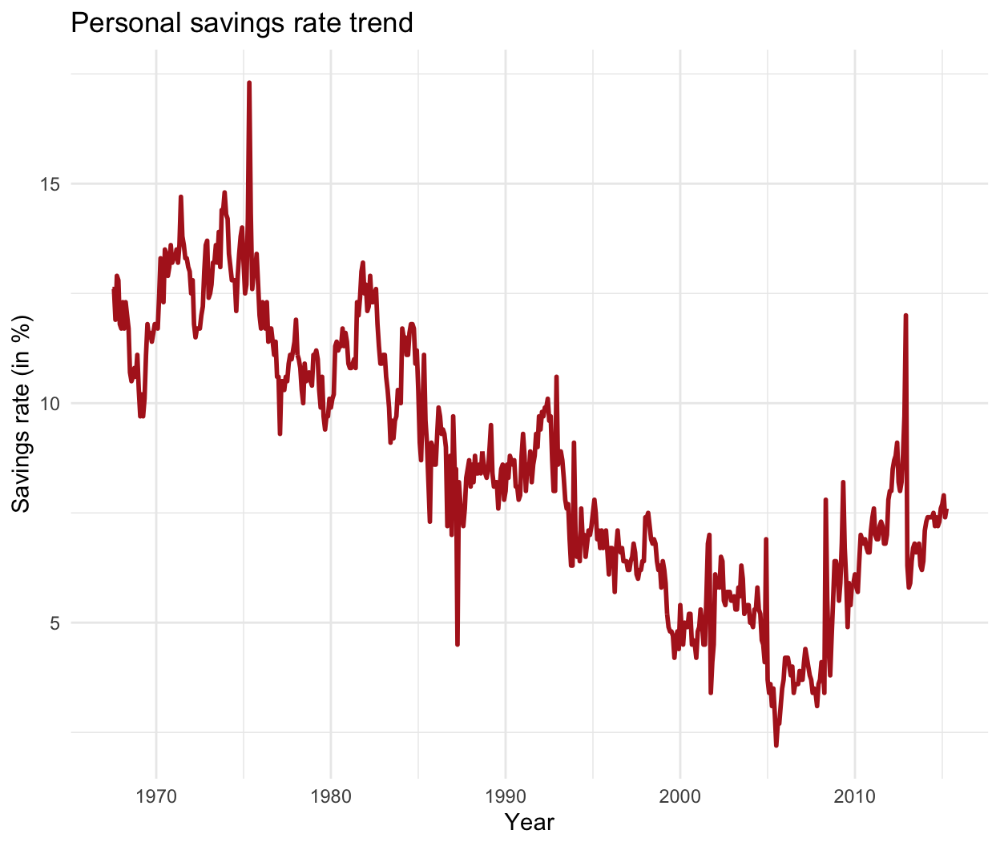
Scatter plots for relationships & correlations
What it does:
Plots individual data points at the intersection of two continuous numeric variables to display positive, negative, or non-linear correlations.
Core question
Does variable X increase, decrease, or remain unchanged as variable Y changes?
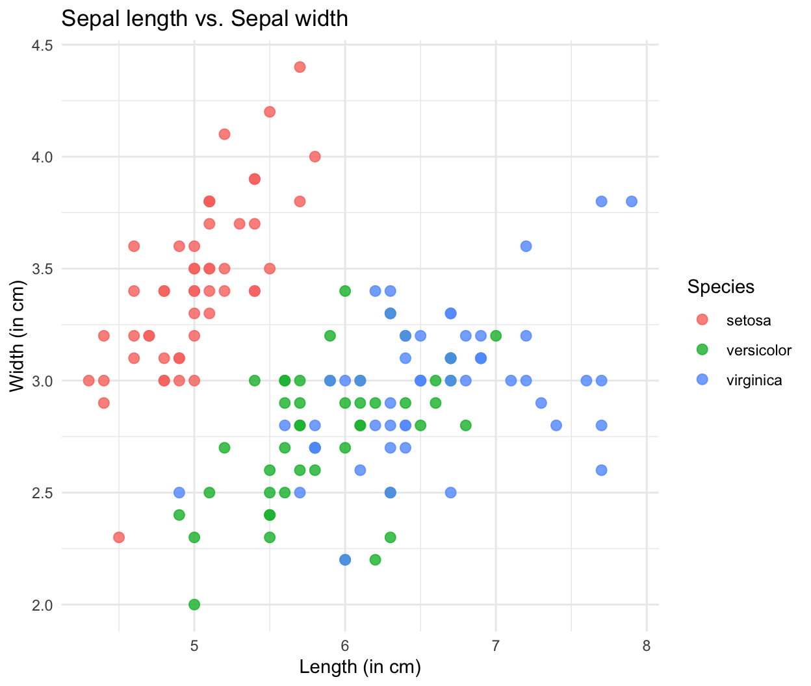
Combined plots for more complex data
What it does:
Plots two types of data at the same time.
Here, a boxplot with an additional scatter plot.
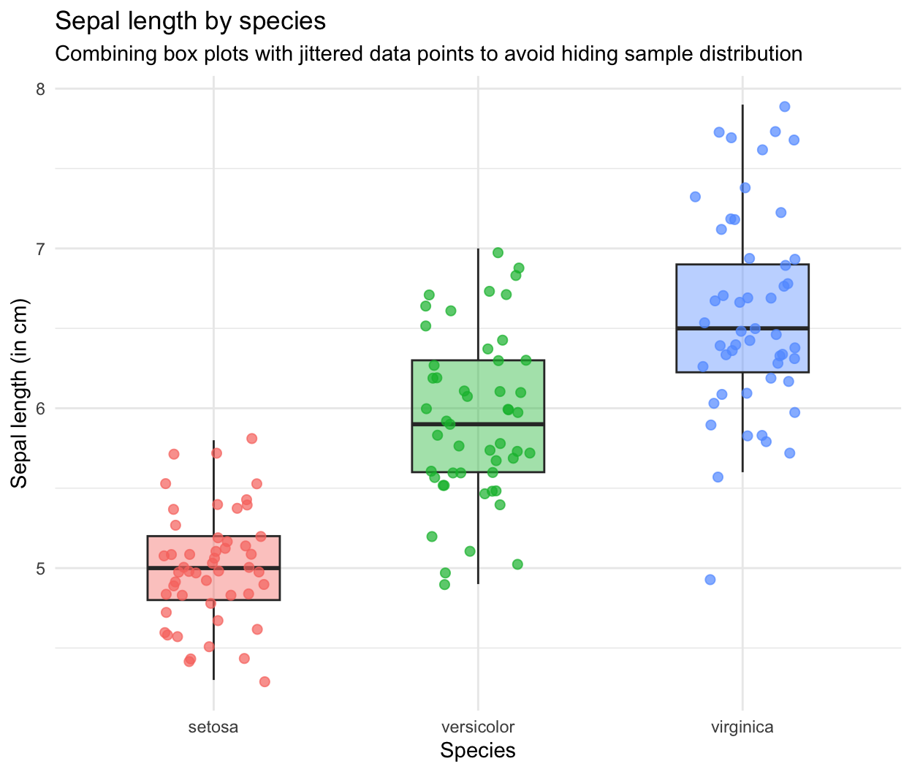
Part 2: A step-by-step guide to plot figures with R
2.1 Introduction to ggplot2 and its spirit
Why using the ggplot2 package:
- Full control of what we want to plot
- Customization of the figure (legends, annotations, changing the theme and the colors, etc.)
The core spirit of ggplot2 is that any data visualization can be broken down into a series of independent layers stacked on top of one another.
Overview of the figure creation process with ggplot2
Layer 1: Initialize
Step 1: Initialize
Create the empty canvas.
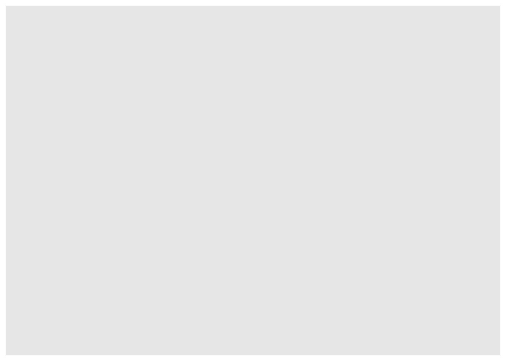
Layer 2: Aesthetics
Step 2: Indicate what to plot
In ggplot2 terms, this is called the ‘aesthetics’ (aes()).
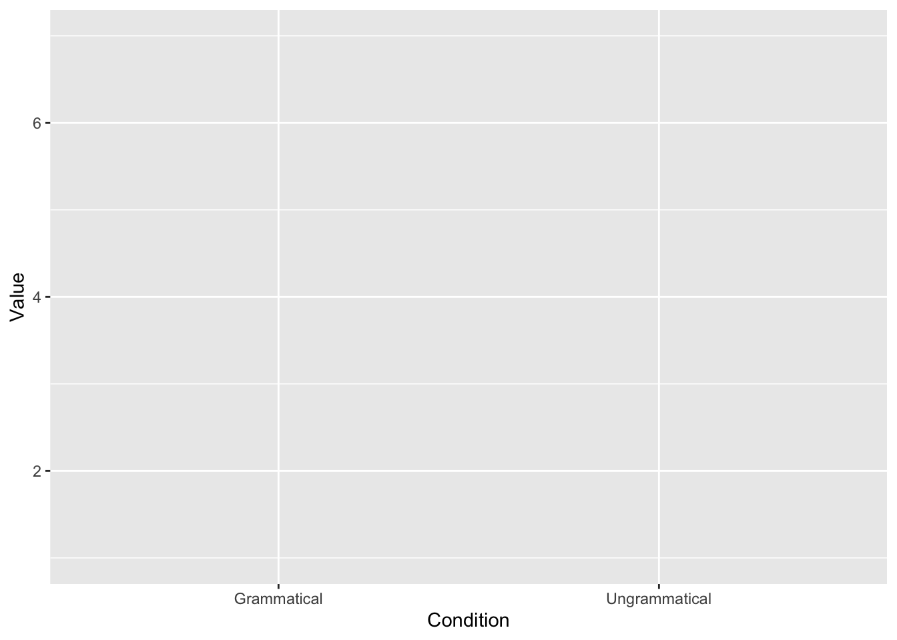
Layer 3: Geometry
Step 3: Indicate how to plot
This is the step where you decide the kind of plot you want to use.

Layer 4: Polish
Step 4: Polish the details
Change the theme, the color, add a title (and subtitle), change the legend, the font style and size, etc.
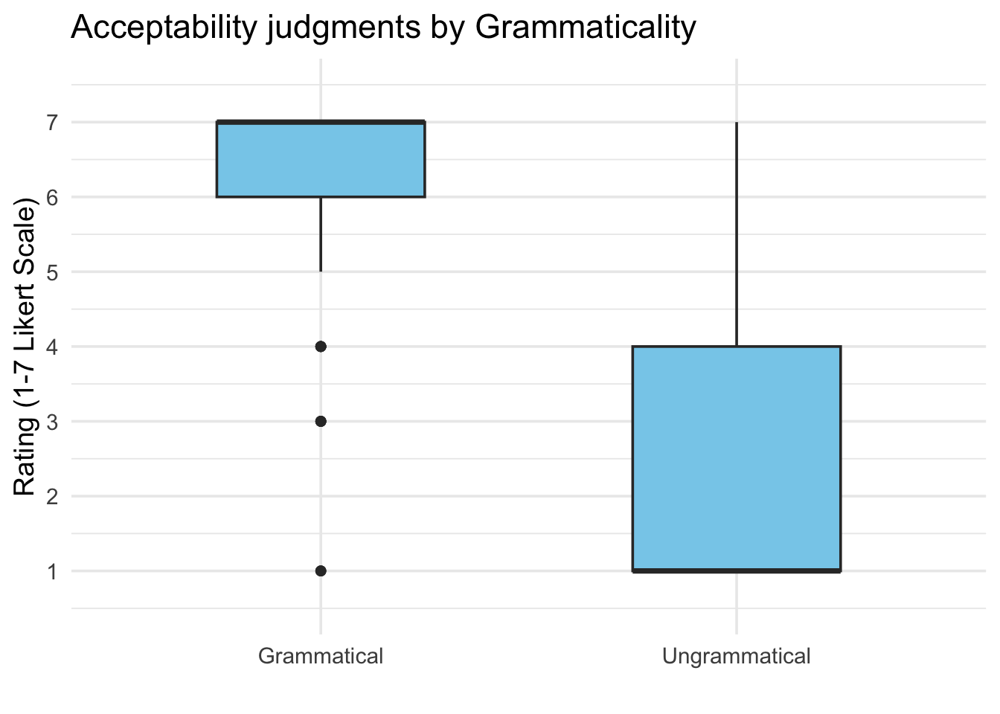
Examples with codes: Acceptability results
A. Load the libraries
B. Process to data cleaning (Same as Week 13)
## 2.1 Select the participants with a human-like behavior
PartMeanRT <- aggregate(RT ~ ID_1_TimeReceived,
data = data3,
FUN = mean)
data_OtherPart <- subset(PartMeanRT, RT > 1000)
data_OtherPart_FullData <- droplevels(subset(data3,
ID_1_TimeReceived %in% data_OtherPart$ID_1_TimeReceived))
plot(data_OtherPart_FullData$RT ~ data_OtherPart_FullData$ID_1_TimeReceived, outline = FALSE)
plot(data_OtherPart_FullData$Value ~ data_OtherPart_FullData$Condition)
## 2.2 Remove outlier trials
### 2.2.1 Absolute values
data_OtherPart_CleanAbsolute <- subset(data_OtherPart_FullData, RT > 200 & RT < 20000)
### 2.2.2 Relative values
# Calculate the mean per Participant and Condition
data_OtherPart_CleanAbsolute$m_rt <- ave(data_OtherPart_CleanAbsolute$RT,
data_OtherPart_CleanAbsolute$ID_1_TimeReceived,
data_OtherPart_CleanAbsolute$Condition,
FUN = mean)
# 2. Calculate the SD per Participant and Condition
data_OtherPart_CleanAbsolute$sd_rt <- ave(data_OtherPart_CleanAbsolute$RT,
data_OtherPart_CleanAbsolute$ID_1_TimeReceived,
data_OtherPart_CleanAbsolute$Condition,
FUN = sd)
# 3. Subset the data to remove outliers
data_OtherPart_CleanAbsoluteRelative <- subset(data_OtherPart_CleanAbsolute,
RT >= (m_rt - 2.5 * sd_rt) &
RT <= (m_rt + 2.5 * sd_rt))
### 2.2.3 Calculate the number of trials removed
FullData_NbTrials <- nrow(data_OtherPart_FullData)
TrimmedData_NbTrials <- nrow(data_OtherPart_CleanAbsoluteRelative)
# Number of trimmed trials
NbTrimmedTrials <- FullData_NbTrials - TrimmedData_NbTrials
NbTrimmedTrials
# Proportion (%)
NbTrimmedTrials*100/FullData_NbTrialsC. Create the canvas
D. Include what to plot (the “aesthetics”)
E. Include how to plot
F. Polish the details
ggplot(data_OtherPart_CleanAbsoluteRelative,
aes(x = Condition,
y = Value,
fill = Condition)) +
geom_boxplot(fill = "skyblue",
width = 0.5) +
labs(title = "Acceptability judgments by Grammaticality",
x = "",
y = "Rating (1-7 Likert Scale)") +
theme_minimal(base_size = 14) +
theme(legend.position = "none") +
scale_y_continuous(limits = c(0.5, 7.5),
breaks = 1:7)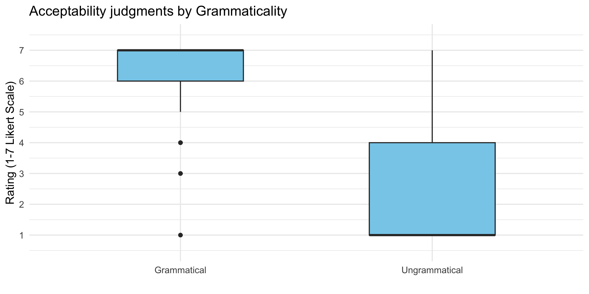
Bar plots of the acceptability results
A. Create a summary of the results
B. Create the canvas
C. Include what to plot (the “aesthetics”)
D. Include how to plot
E. Polish the details
ggplot(JudgSummary,
aes(x = Condition,
y = Value,
fill = Condition)) +
geom_col(width = 0.5, alpha = 0.9) +
geom_errorbar(aes(ymin = Value - ci,
ymax = Value + ci),
width = 0.15,
size = 0.7) +
geom_text(aes(label = round(Value, 2)),
vjust = 4,
color = "white",
size = 5,
fontface = "bold") +
scale_y_continuous(limits = c(1, 7),
breaks = 1:7,
oob = scales::rescale_none)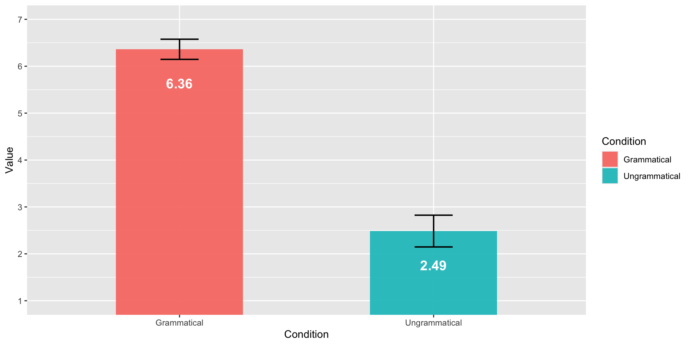
Complex bar plots for the acceptability ratings
A. Create a summary of the results
How many datasets?
- Bar plots for the general pattern,
- Scatter plots to visualize the results from each trial.
We need two types of summary datasets: (1) general pattern, and (2) by-trial results.
JudgSummary <- summarySE(data_OtherPart_CleanAbsoluteRelative,
measurevar = "Value",
groupvars = "Condition")
JudgSummary Condition N Value sd se ci
1 Grammatical 144 6.361111 1.304168 0.1086807 0.2148283
2 Ungrammatical 142 2.485915 2.041193 0.1712931 0.3386347JudgSummaryItem <- summarySE(data_OtherPart_CleanAbsoluteRelative,
measurevar = "Value",
groupvars = c("Condition", "ItemNo"))
JudgSummaryItem Condition ItemNo N Value sd se ci
1 Grammatical 1 7 7.000000 0.0000000 0.0000000 0.0000000
2 Grammatical 10 7 6.857143 0.3779645 0.1428571 0.3495588
3 Grammatical 11 5 5.400000 2.6076810 1.1661904 3.2378636
4 Grammatical 12 7 6.857143 0.3779645 0.1428571 0.3495588
5 Grammatical 13 6 7.000000 0.0000000 0.0000000 0.0000000
6 Grammatical 14 7 7.000000 0.0000000 0.0000000 0.0000000
7 Grammatical 15 7 5.571429 2.2253946 0.8411201 2.0581467
8 Grammatical 16 3 6.000000 1.0000000 0.5773503 2.4841377
9 Grammatical 17 3 6.000000 1.7320508 1.0000000 4.3026527
10 Grammatical 18 2 6.000000 1.4142136 1.0000000 12.7062047
11 Grammatical 19 3 5.666667 2.3094011 1.3333333 5.7368703
12 Grammatical 2 7 6.571429 0.7867958 0.2973809 0.7276647
13 Grammatical 20 3 6.333333 1.1547005 0.6666667 2.8684352
14 Grammatical 21 3 5.333333 2.0816660 1.2018504 5.1711450
15 Grammatical 22 3 6.000000 1.7320508 1.0000000 4.3026527
16 Grammatical 23 3 4.666667 1.5275252 0.8819171 3.7945830
17 Grammatical 24 3 6.333333 1.1547005 0.6666667 2.8684352
18 Grammatical 25 3 6.000000 1.0000000 0.5773503 2.4841377
19 Grammatical 26 3 5.000000 1.0000000 0.5773503 2.4841377
20 Grammatical 27 3 5.666667 1.5275252 0.8819171 3.7945830
21 Grammatical 28 3 4.333333 2.8867513 1.6666667 7.1710879
22 Grammatical 29 3 6.333333 1.1547005 0.6666667 2.8684352
23 Grammatical 3 7 6.428571 1.5118579 0.5714286 1.3982353
24 Grammatical 30 3 5.666667 1.5275252 0.8819171 3.7945830
25 Grammatical 4 7 7.000000 0.0000000 0.0000000 0.0000000
26 Grammatical 5 7 6.428571 1.5118579 0.5714286 1.3982353
27 Grammatical 6 7 7.000000 0.0000000 0.0000000 0.0000000
28 Grammatical 7 6 7.000000 0.0000000 0.0000000 0.0000000
29 Grammatical 8 7 6.571429 1.1338934 0.4285714 1.0486765
30 Grammatical 9 6 7.000000 0.0000000 0.0000000 0.0000000
31 Ungrammatical 31 3 3.666667 2.5166115 1.4529663 6.2516095
32 Ungrammatical 32 3 2.000000 1.7320508 1.0000000 4.3026527
33 Ungrammatical 33 3 2.333333 2.3094011 1.3333333 5.7368703
34 Ungrammatical 34 3 4.000000 1.0000000 0.5773503 2.4841377
35 Ungrammatical 35 2 1.000000 0.0000000 0.0000000 0.0000000
36 Ungrammatical 36 3 2.666667 2.8867513 1.6666667 7.1710879
37 Ungrammatical 37 3 2.666667 2.8867513 1.6666667 7.1710879
38 Ungrammatical 38 3 5.666667 1.5275252 0.8819171 3.7945830
39 Ungrammatical 39 3 3.000000 1.0000000 0.5773503 2.4841377
40 Ungrammatical 40 3 1.666667 1.1547005 0.6666667 2.8684352
41 Ungrammatical 41 3 2.333333 1.5275252 0.8819171 3.7945830
42 Ungrammatical 42 3 2.666667 1.5275252 0.8819171 3.7945830
43 Ungrammatical 43 3 6.000000 1.0000000 0.5773503 2.4841377
44 Ungrammatical 44 3 2.333333 2.3094011 1.3333333 5.7368703
45 Ungrammatical 45 3 2.333333 1.5275252 0.8819171 3.7945830
46 Ungrammatical 46 7 1.571429 1.1338934 0.4285714 1.0486765
47 Ungrammatical 47 7 2.857143 2.8535692 1.0785478 2.6391113
48 Ungrammatical 48 5 2.400000 2.6076810 1.1661904 3.2378636
49 Ungrammatical 49 7 1.285714 0.4879500 0.1844278 0.4512785
50 Ungrammatical 50 6 4.000000 2.4494897 1.0000000 2.5705818
51 Ungrammatical 51 7 4.285714 2.4976179 0.9440108 2.3099113
52 Ungrammatical 52 7 3.000000 2.7688746 1.0465362 2.5607819
53 Ungrammatical 53 5 1.600000 0.8944272 0.4000000 1.1105780
54 Ungrammatical 54 7 1.428571 1.1338934 0.4285714 1.0486765
55 Ungrammatical 55 6 3.500000 2.8106939 1.1474610 2.9496423
56 Ungrammatical 56 6 1.166667 0.4082483 0.1666667 0.4284303
57 Ungrammatical 57 7 2.142857 1.4638501 0.5532833 1.3538355
58 Ungrammatical 58 7 2.142857 2.1930627 0.8288998 2.0282447
59 Ungrammatical 59 7 1.285714 0.4879500 0.1844278 0.4512785
60 Ungrammatical 60 7 1.285714 0.4879500 0.1844278 0.4512785B. Create the figure
ggplot(JudgSummary,
aes(x = Condition,
y = Value,
fill = Condition)) +
geom_col(width = 0.5, alpha = 0.3) +
geom_errorbar(aes(ymin = Value - ci,
ymax = Value + ci),
width = 0.15,
size = 0.7) +
geom_text(aes(label = round(Value, 2)),
vjust = 4,
color = "black",
size = 5,
fontface = "bold") +
scale_y_continuous(limits = c(1, 7),
breaks = 1:7,
oob = scales::rescale_none) +
geom_jitter(data = JudgSummaryItem,
aes(color = Condition),
width = 0.2,
height = 0.1,
alpha = 0.5,
size = 2.5) +
theme_minimal(base_size = 14)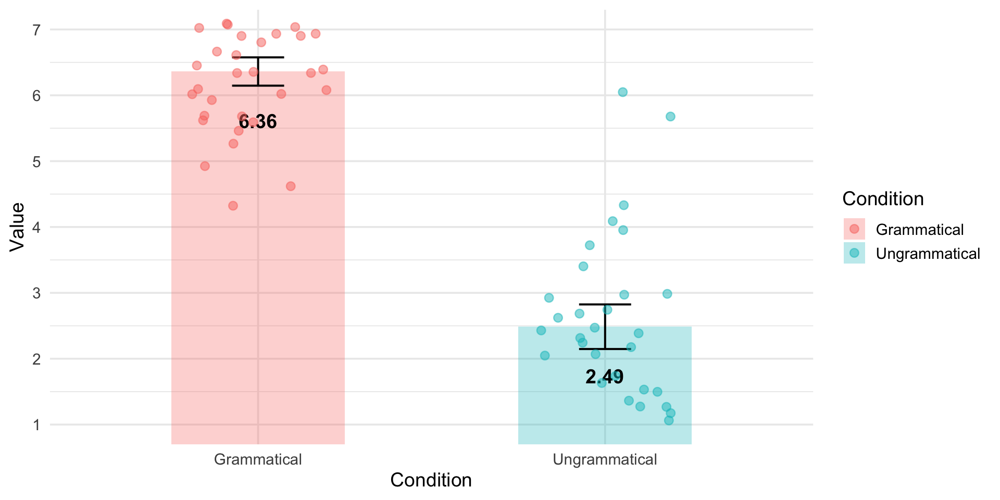
Reaction time: Box plots
No need to summarize the data with boxplots!
ggplot(data_OtherPart_CleanAbsoluteRelative,
aes(x = Condition,
y = RT,
fill = Condition)) +
geom_boxplot(fill = "skyblue",
width = 0.5) +
labs(title = "RT by Grammaticality",
x = "",
y = "Reaction time (in millisecond)") +
theme_minimal(base_size = 14) +
theme(legend.position = "none") +
scale_y_continuous(limits = c(0, 20000),
breaks = seq(0, 20000, by = 4000))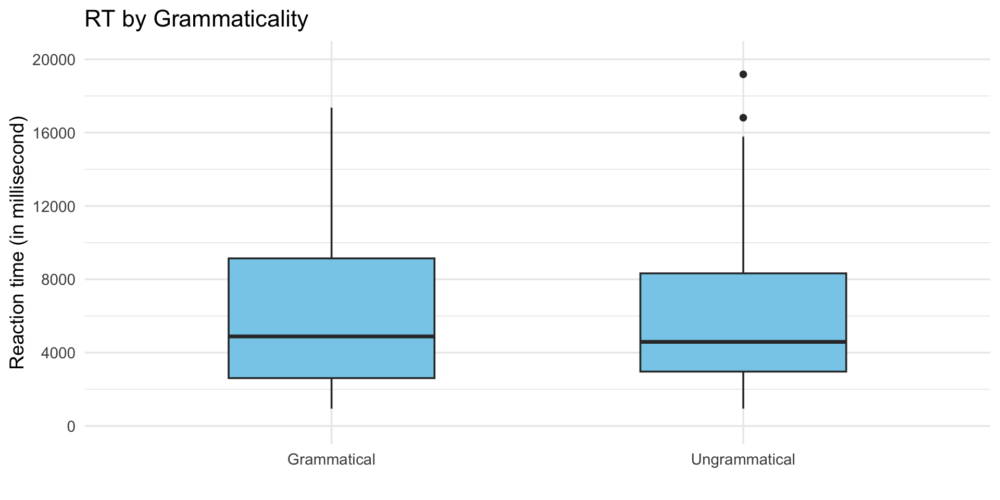
Reaction time: Bar plots
RTSummary <- summarySE(data_OtherPart_CleanAbsoluteRelative,
measurevar = "RT",
groupvars = "Condition")
ggplot(RTSummary,
aes(x = Condition,
y = RT,
fill = Condition)) +
geom_col(width = 0.5, alpha = 0.9) +
geom_errorbar(aes(ymin = RT - ci,
ymax = RT + ci),
width = 0.15,
size = 0.7) +
geom_text(aes(label = round(RT)),
vjust = 8,
color = "white",
size = 5,
fontface = "bold") +
scale_y_continuous(limits = c(4000, 7000),
breaks = seq(4000, 7000, by = 1000),
oob = scales::rescale_none)| Condition | N | RT | sd | se | ci |
|---|---|---|---|---|---|
| Grammatical | 144 | 6131.653 | 4240.087 | 353.3406 | 698.4457 |
| Ungrammatical | 142 | 6111.190 | 4277.881 | 358.9918 | 709.7022 |
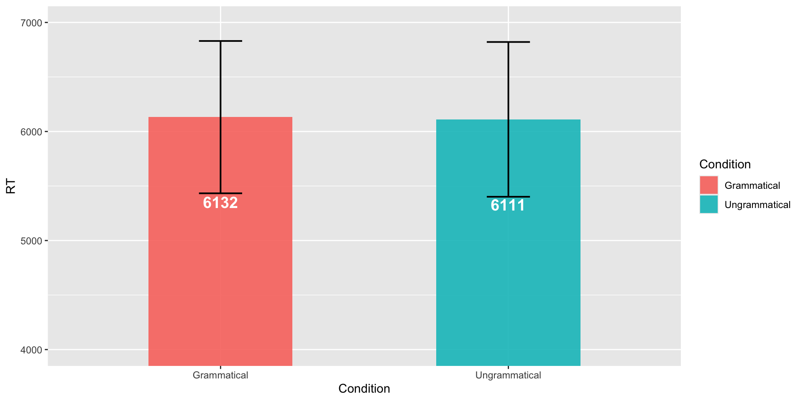
Complex bar plots for the reaction time
A. Create a summary of the results
How many datasets?
- Bar plots for the general pattern,
- Scatter plots to visualize the results from each trial.
We need two types of summary datasets: (1) general pattern, and (2) by-trial results.
B. Create the figure
ggplot(RTSummary,
aes(x = Condition,
y = RT,
fill = Condition)) +
geom_col(width = 0.5, alpha = 0.3) +
geom_errorbar(aes(ymin = RT - ci,
ymax = RT + ci),
width = 0.15,
size = 0.7) +
geom_text(aes(label = round(RT)),
vjust = 8,
color = "black",
size = 5,
fontface = "bold") +
scale_y_continuous(limits = c(3000, 9000),
breaks = seq(3000, 9000, by = 2000),
oob = scales::rescale_none) +
geom_jitter(data = RTSummaryItem,
aes(color = Condition),
width = 0.2,
height = 0.1,
alpha = 0.5,
size = 2.5) +
theme_minimal(base_size = 14)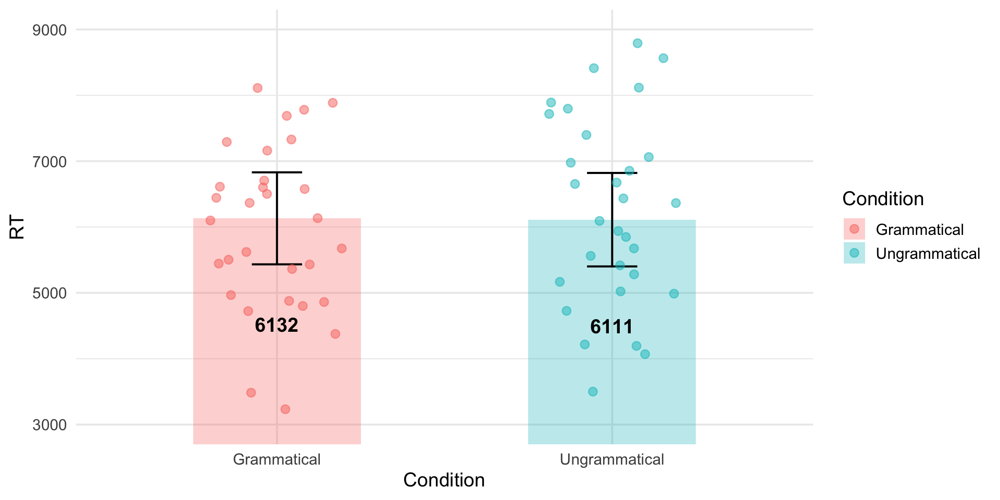
Visualizing the background information
A. Create a summary of the background information
Why summarizing?
Our dataset includes more than 20 observations per participants, meaning that the same type of information (e.g., the age and highest degree of Participant 1) appears more than 20 times. Therefore, we need to create a new dataset where “1 row = 1 participant”.
ParticipantBackground <- data_OtherPart_CleanAbsoluteRelative %>%
distinct(ID_1_TimeReceived, .keep_all = TRUE) %>%
select(ID_1_TimeReceived, UserAge, UserDegree)
ParticipantBackground$UserDegree <- factor(ParticipantBackground$UserDegree,
levels = c("High school", "BA", "MA", "Ph.D.") )
ParticipantBackground ID_1_TimeReceived UserAge UserDegree
1 1777517421 30 Ph.D.
2 1777519798 54 MA
3 1777952741 23 MA
4 1778728888 21 BA
5 1778729203 22 High school
6 1778730554 23 BA
7 1778737433 25 BA
8 1778742733 23 High school
9 1778763194 22 BA
10 1778782660 26 BAB. Plot the age of the participants
C. Plot the highest degree of the participants
ggplot(ParticipantBackground,
aes(x = UserDegree,
fill = UserDegree)) +
geom_bar(width = 0.5,
color = "black",
alpha = 0.8,
show.legend = FALSE) +
geom_text(stat = "count",
aes(label = after_stat(count)),
vjust = -0.5,
size = 5) +
labs(x = "",
y = "Number of participants") +
scale_fill_brewer(palette = "Pastel1") +
theme_classic(base_size = 14) +
scale_y_continuous(expand = expansion(mult = c(0, 0.15)))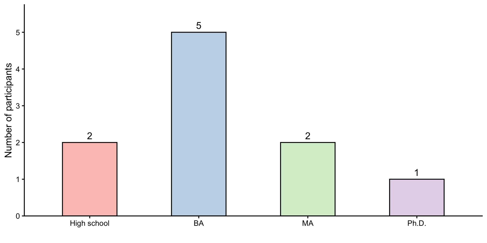
D. Plot the age and the highest degree of the participants at the same time
ggplot(ParticipantBackground,
aes(x = UserDegree,
y = UserAge,
fill = UserDegree)) +
geom_jitter(width = 0.1,
height = 0,
alpha = 0.5,
size = 2.5,
color = "dimgray") +
geom_boxplot(width = 0.4,
alpha = 0.7,
outlier.shape = NA) +
labs(x = "Highest degree",
y = "Age") +
scale_fill_brewer(palette = "Pastel1") +
theme_classic(base_size = 14) +
theme(legend.position = "none")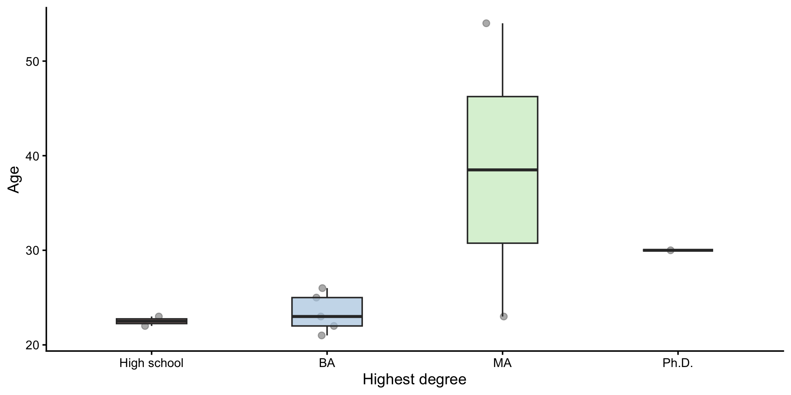
📝 Assignment for next week
Important
Please annotate the Markdown file from this week, knit to a PDF file, and upload on Moodle!
Next week = Assistance for handling results. Please have the Markdown document(s) to import your results, clean the dataset and explore/visualize the data ready!